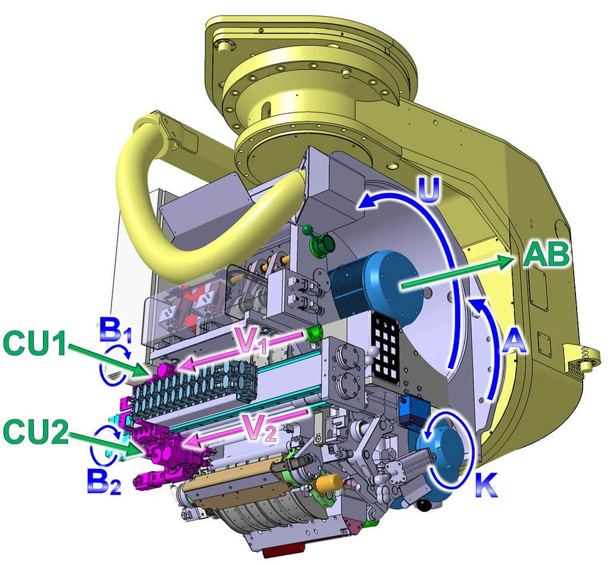
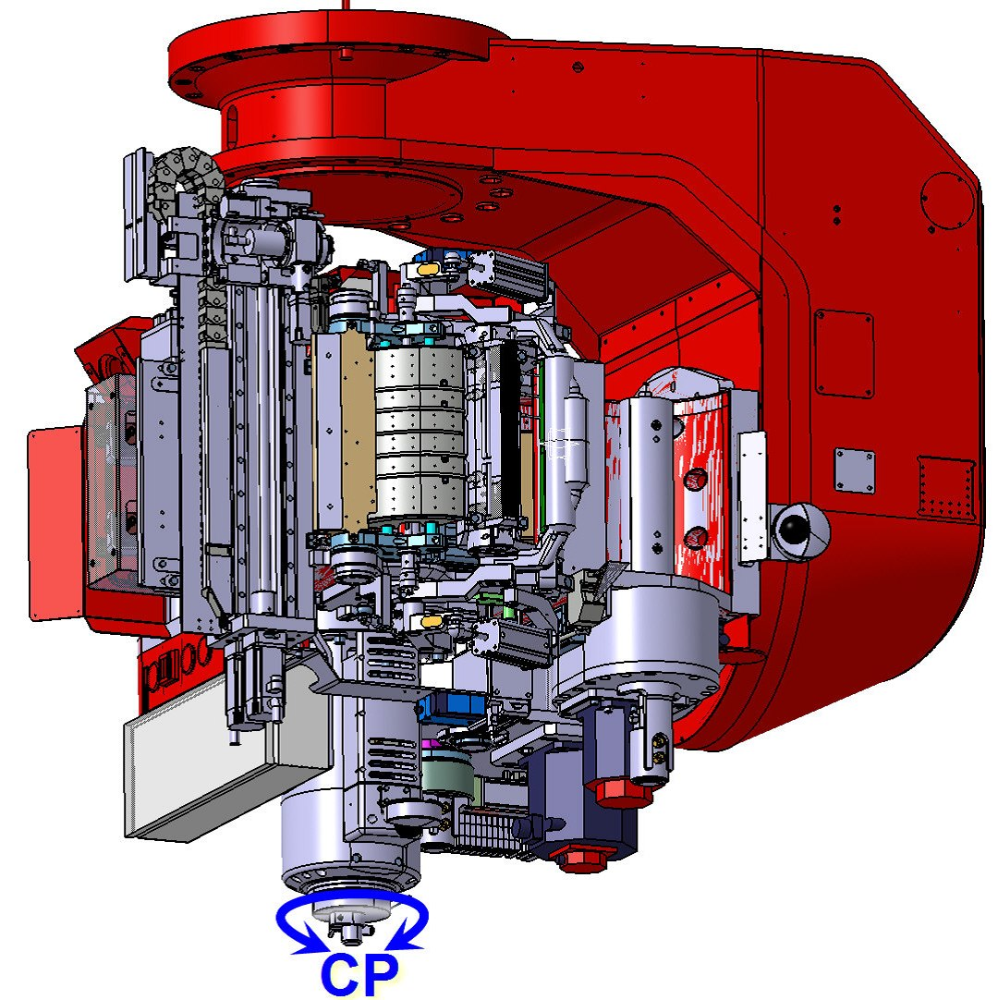

Head-specific geometric, positioning and repeatability procedures from the source protocol. Checklist completion tracks execution only; it is not metrological validation or formal approval.
0 / 0
Procedure checklist progress · 0%
7
Geometric sections
5
Positioning sections
23
Source result rows
12
Documented axis labels
Source protocol
Revision0 · 20/02/2023
Written byEsther Zudaire
Acceptance phasePAT/FAT
9575_ATL3D_HEAD_Geometric protocolV0.docx · Grupo M. Torres. Follow the source document's restrictions.
00 / PREVIOUS CONSIDERATIONS
Previous considerations
0.1 · Protocol purpose
This document defines the geometrical tests, methodology and admissible tolerances for the acceptance tests to be carried out in the ATL machine.
0.2 · General process description
All length measurements are stated in both mm and inches.
The measuring instruments and methodology are specified in each test section.
Include each interferometer test stroke and its upper/lower limits in the graph.
Record machine designation, acquisition date, current date, operator, location and serial number on each interferometer file.
The listed order does not prescribe practical test order; tests may be reordered to facilitate setup.
At final acceptance perform all tests. At customer site repeat only elements whose adjustment may have changed due to transport or installation.
0.3 · Test conditions
A temperature departure from 20 °C may add uncertainty from the effective expansion coefficient used for compensation. Typical minimum range in the source: ±2 µm/(m·°C), ISO 230-2:2006.
For strokes over 30 m, the source calls for two or three measurement sections, preserving the accuracy of one measurement and combining the charts; it gives no segment-specific acceptance method.
Pending source information: definition and use of monument targets.
All laser measurements must follow INS 75020/MTDI 313022.
00.4 / HEAD AXIS DESIGNATION
0.4 · Head axis designation
The source calls X, Y, Z and C trajectory axes and describes the additional laying/cutting axes below. Select a label to view only the function stated in the source.

Source figure 1 · labelled Head axes. Labels and component positions are reproduced as shown in the source.

Source detail · CP rotation axis.
01 / GEOMETRICAL CHECKING
Geometrical checking
Seven geometric checks from the protocol. Methods and result rows follow the source; no acceptance result is calculated automatically.
02 / POSITIONING AND REPEATABILITY
Positioning and repeatability test
Five procedure sections are provided. Source result rows without a matching procedure remain visible without invented methods.
03 / TABLE OF RESULTS
Table of results
Source operation names, admissible deviations, local tolerances and Resp codes are reproduced as provided. Enter available data in execution mode; fields are optional.
No automatic pass/fail evaluation
Numbering does not fully match the source index and procedure headings. Rows 2.2 A-axis positioning and B repeatability have no matching procedures and are retained as source-only records.